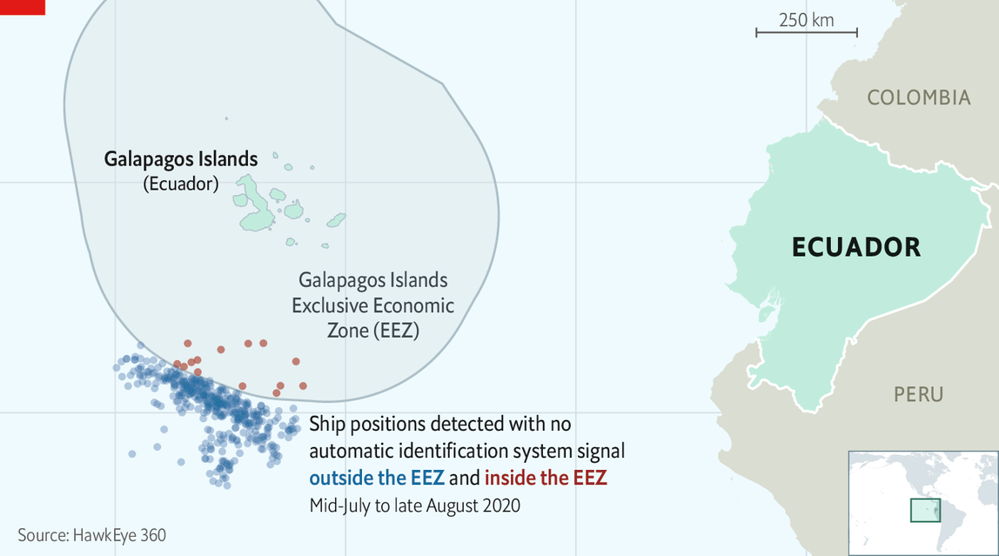
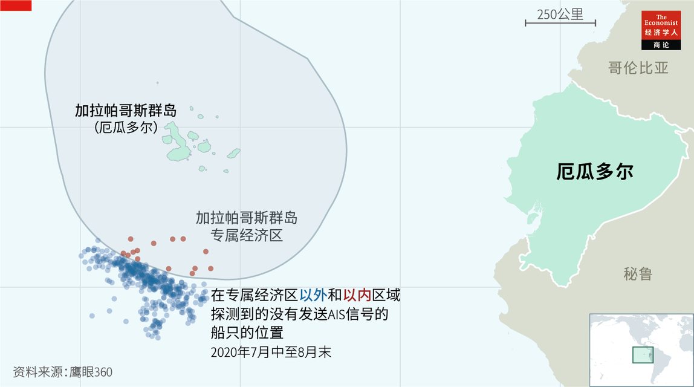

Text
2021-04-30T13:46:13+00:00
Espionage
间谍活动
間諜活動
Ears in the sky
天上有耳
天上有耳
By listening for radio and radar signals, a new generation of satellites can track human activity, both licit and illicit
通过收听无线电和雷达信号，新一代卫星可以追踪人类活动，无论是合法还是非法活动
通過收聽無線電和雷達信號，新一代衛星可以追蹤人類活動，無論是合法還是非法活動
IN THE MIDDLE of last year, Ecuadorians watched with concern as 340 foreign boats, most of them Chinese, fished just outside the Exclusive Economic Zone (EEZ) around their country’s westernmost province, the Galapagos Islands. The law of the sea requires such vessels to carry GPS-based automatic identification systems (AIS) that broadcast where they are, and to keep those systems switched on. Some boats, however, failed to comply. There were more than 550 instances of vessels not transmitting their locations for over a day. This regular radio silence stoked fears that the boats concerned were sneaking into Ecuador’s waters to plunder its fish.
去年年中，厄瓜多尔关切地盯紧340艘外国渔船——主要是中国渔船，它们正紧贴着该国最西部省份加拉帕哥斯群岛（Galapagos Islands）周边的专属经济区边缘捕鱼。按照海洋法的规定，这类船只须携带基于GPS的自动识别系统（AIS），以播报自己所处的位置，并且必须保持该系统一直打开。但有些船只没有遵守规定，出现了550多起超过一天未发送位置的情况。这种经常性的无线电静默让人们担忧这些船只正潜入厄瓜多尔的海域掠夺鱼类资源。
去年年中，厄瓜多爾關切地盯緊340艘外國漁船——主要是中國漁船，它們正緊貼着該國最西部省份加拉帕哥斯群島（Galapagos Islands）周邊的專屬經濟區邊緣捕魚。按照海洋法的規定，這類船隻須攜帶基於GPS的自動識別系統（AIS），以播報自己所處的位置，並且必須保持該系統一直打開。但有些船隻沒有遵守規定，出現了550多起超過一天未發送位置的情況。這種經常性的無線電靜默讓人們擔憂這些船隻正潛入厄瓜多爾的海域掠奪魚類資源。
Both local officials and China’s ambassador to Ecuador denied this, and said all the boats were sticking to the rules. In October, however, HawkEye 360, a satellite operator based in Virginia, announced it had detected vessels inside Ecuador’s EEZ on 14 occasions when the boats in question were not transmitting AIS (see map). HawkEye’s satellites could pinpoint these renegades by listening for faint signals emanating from their navigation radars and radio communications.
当地官员和中国驻厄瓜多尔大使都否认了这一点，并表示所有船只都遵照规定。然而，去年10月，总部位于弗吉尼亚州的卫星运营商鹰眼360（HawkEye 360）宣布，它曾14次探测到有船只在关闭AIS期间位于厄瓜多尔的专属经济区内（见地图）。鹰眼的卫星可以通过收听这些不守规矩的船舶的导航雷达和无线电通信发出的微弱信号，来确定它们的位置。
當地官員和中國駐厄瓜多爾大使都否認了這一點，並表示所有船隻都遵照規定。然而，去年10月，總部位於弗吉尼亞州的衛星運營商鷹眼360（HawkEye 360）宣布，它曾14次探測到有船隻在關閉AIS期間位於厄瓜多爾的專屬經濟區內（見地圖）。鷹眼的衛星可以通過收聽這些不守規矩的船舶的導航雷達和無線電通信發出的微弱信號，來確定它們的位置。
HawkEye’s satellites are so-called smallsats, about the size of a large microwave oven. They are therefore cheap to build and launch. HawkEye deployed its first cluster, of three of them, in 2018. They are now in an orbit that takes them over both of Earth’s poles. This means that, as the planet revolves beneath them, every point on its surface can be monitored at regular intervals.
鹰眼的卫星是所谓的小卫星，和一台大号微波炉差不多大，因此造价和发射成本都很低。2018年，鹰眼部署了它的首个由三颗卫星组成的卫星集群。它们目前都处在飞越地球两极上空的轨道上。这就意味着，随着地球在它们下方旋转，地表上的每个地点每隔一定时间都能被监测到。
鷹眼的衛星是所謂的小衛星，和一台大號微波爐差不多大，因此造價和發射成本都很低。2018年，鷹眼部署了它的首個由三顆衛星組成的衛星集群。它們目前都處在飛越地球兩極上空的軌道上。這就意味着，隨着地球在它們下方旋轉，地表上的每個地點每隔一定時間都能被監測到。
Initially, the data the satellites collected were downloaded to a tracking station on Svalbard, a Norwegian island in the Arctic Ocean. But business has since boomed. HawkEye now counts a dozen governments among its customers, as well as private clients. The firm has therefore recruited the services of a second ground station, in Antarctica, and it put a second cluster into orbit on January 24th. It plans three more such launches this year, and also intends to widen its network of ground stations yet further.
最初，这些卫星收集的数据被下载到北冰洋中的挪威斯瓦尔巴群岛（Svalbard）上的一个跟踪站。但自那以后，生意日渐兴隆。现在除了私人客户，还有12个政府客户。因此，鹰眼公司已经完成了在南极洲的第二个地面站各项服务的招募工作，并于1月24日把第二个卫星集群送入了轨道。它计划今年再完成三次这样的发射，并打算进一步扩大自己的地面站网络。
最初，這些衛星收集的數據被下載到北冰洋中的挪威斯瓦爾巴群島（Svalbard）上的一個跟蹤站。但自那以後，生意日漸興隆。現在除了私人客戶，還有12個政府客戶。因此，鷹眼公司已經完成了在南極洲的第二個地面站各項服務的招募工作，並於1月24日把第二個衛星集群送入了軌道。它計劃今年再完成三次這樣的發射，並打算進一步擴大自己的地面站網絡。
Given this success, it is hardly surprising that at least six other companies are operating or developing similar systems. Quilty Analytics, a research firm in Florida, expects the number of radio-frequency (RF) intelligence satellites of this sort in orbit to multiply from a dozen at the beginning of January to more than 60 by the end of next year.
生意如此红火，也难怪至少还有六家公司也在运营或研发类似的系统了。位于佛罗里达州的调研公司Quilty Analytics预计，在轨运行的这类射频情报卫星的数量将从今年1月初的12颗激增到明年底的60多颗。
生意如此紅火，也難怪至少還有六家公司也在運營或研發類似的系統了。位於佛羅里達州的調研公司Quilty Analytics預計，在軌運行的這類射頻情報衛星的數量將從今年1月初的12顆激增到明年底的60多顆。
Unmixed signals
信号不混杂
信號不混雜
RF-intelligence satellites detect where a transmission is coming from in two ways. One, trilateration, relies on measuring minute differences in a signal’s arrival time at each member of a cluster. The other uses the Doppler effect—the shift in a signal’s frequency if the transmitter is moving relative to the receiver. Together, according to HawkEye, these can pinpoint a signal’s source to within 500 metres of its true origin. Kleos Space, a Luxembourgeois company that launched its first cluster in November and hopes to put two more up later this year, says its accuracy ranges between 3,000 and 200 metres.
射频情报卫星通过两种方法探测信号传输的源头。一种是三边测量法，测量信号抵达集群中的每颗卫星的微小时间差。另一种使用多普勒效应——如果信号发射机相对于卫星信号接收机在移动，信号的频率就会发生变化。鹰眼表示，把这两种方法结合在一起，可以准确定位信号的来源——误差不超过500米。去年11月，卢森堡的Kleos Space公司发射了自己的第一个卫星集群，并希望在今年晚些时候再发射两个，该公司声称自己的定位精度在200米到3000米之间。
射頻情報衛星通過兩種方法探測信號傳輸的源頭。一種是三邊測量法，測量信號抵達集群中的每顆衛星的微小時間差。另一種使用多普勒效應——如果信號發射機相對於衛星信號接收機在移動，信號的頻率就會發生變化。鷹眼表示，把這兩種方法結合在一起，可以準確定位信號的來源——誤差不超過500米。去年11月，盧森堡的Kleos Space公司發射了自己的第一個衛星集群，並希望在今年晚些時候再發射兩個，該公司聲稱自己的定位精度在200米到3000米之間。
A cluster sweeps a band of territory 2,000km wide so, circling the planet every 90 minutes or so, it can revisit many areas several times a day. Moreover, unlike spy satellites fitted with optical cameras, RF satellites can see through clouds. Their receivers are not sensitive enough to detect standard mobile phones. But they can pick up satellite phones, walkie-talkies and all manner of radar. And, while vessels can and do illicitly disable their AIS, switching off their communications gear and the radar they use for navigation and collision-avoidance is another matter entirely. “Even pirates don’t turn those things off,” says John Beckner, boss of Horizon Technologies, a British firm that plans its first launch in August.
一个卫星集群可扫视2000公里宽的区域，大概每90分钟左右环绕地球一周，因此一天内可以多次重访许多地区。此外，不同于安装了光学相机的间谍卫星，射频卫星可以透过云层监视地面。它们的接收机不够灵敏，无法探测到手机信号。但它们可以接收卫星电话、无线对讲机和各种雷达的信号。而且，尽管船舶能够关闭自己的AIS系统，也会非法故意将它们关掉，但关闭用于导航和避碰的通讯设备和雷达就完全是另一回事了。“连海盗也不会关掉这些东西。”计划在8月进行第一次发射的英国公司Horizon Technologies的老板约翰·贝克纳（John Beckner）说。
一個衛星集群可掃視2000公里寬的區域，大概每90分鐘左右環繞地球一周，因此一天內可以多次重訪許多地區。此外，不同於安裝了光學相機的間諜衛星，射頻衛星可以透過雲層監視地面。它們的接收機不夠靈敏，無法探測到手機信號。但它們可以接收衛星電話、無線對講機和各種雷達的信號。而且，儘管船舶能夠關閉自己的AIS系統，也會非法故意將它們關掉，但關閉用於導航和避碰的通訊設備和雷達就完全是另一回事了。“連海盜也不會關掉這些東西。”計劃在8月進行第一次發射的英國公司Horizon Technologies的老闆約翰·貝克納（John Beckner）說。
RF data are also cheap to collect. Satellites fitted with robotic high-resolution cameras are costly. Flying microwave ovens that capture and timestamp radio signals are not. Horizon says that building, insuring and launching its August mission should cost no more than about $1.4m.
射频数据的收集成本也很低。搭载自动高分辨率相机的卫星价格昂贵，而捕捉无线电信号并为它们标记时间戳的“飞行微波炉”并不贵。Horizon表示，它8月的任务的制造、投保和发射成本应该不超过140万美元。
射頻數據的收集成本也很低。搭載自動高分辨率相機的衛星價格昂貴，而捕捉無線電信號並為它們標記時間戳的“飛行微波爐”並不貴。Horizon表示，它8月的任務的製造、投保和發射成本應該不超過140萬美元。
America’s National Geospatial-Intelligence Agency (NGA), one of that country’s numerous spying operations, is a big user of RF intelligence. It employs HawkEye’s data to find guerrilla camps and mobile missile-launchers, and to track both conventional warships and unconventional ones, like the weaponised speedboats sometimes deployed by Iran. Robert Cardillo, a former director of the agency who now advises HawkEye, says dozens of navies, Russia’s included, spoof AIS signals to make warships appear to be in places which they are not. RF intelligence is not fooled by this. Mr Cardillo says, too, that the tininess of RF satellites makes them hard for an enemy to destroy.
美国众多间谍机构之一的国家地理空间情报局（NGA）是使用射频情报卫星的大户。它利用鹰眼的数据搜寻游击队营地和移动式导弹发射器，并追踪常规和非常规战舰，比如伊朗有时候部署的配备武器的快艇。前局长罗伯特·卡迪罗（Robert Cardillo）现在是鹰眼的顾问。他表示，俄罗斯等许多国家的海军经常发送欺骗性的AIS信号，让战舰看上去在实际地点之外的地方。但射频情报卫星不会被这种手段欺骗。卡迪罗还说，由于体积小，射频卫星很难被敌人摧毁。
美國眾多間諜機構之一的國家地理空間情報局（NGA）是使用射頻情報衛星的大戶。它利用鷹眼的數據搜尋游擊隊營地和移動式導彈發射器，並追蹤常規和非常規戰艦，比如伊朗有時候部署的配備武器的快艇。前局長羅伯特·卡迪羅（Robert Cardillo）現在是鷹眼的顧問。他表示，俄羅斯等許多國家的海軍經常發送欺騙性的AIS信號，讓戰艦看上去在實際地點之外的地方。但射頻情報衛星不會被這種手段欺騙。卡迪羅還說，由於體積小，射頻衛星很難被敵人摧毀。
Beside matters military, the NGA also uses RF data to unearth illicit economic activity—of which unauthorised fishing is merely one instance. Outright piracy is another. And the technique also works on land. In 2019, for example, it led to the discovery of an illegal gold mine being run by a Chinese company in a jungle in Gabon. And in 2020 the managers of Garamba National Park in the Democratic Republic of Congo began using HawkEye data to spot elephant poachers and dispatch rangers to deal with them.
除了军事用途，NGA还利用射频卫星数据来发现非法经济活动，未经许可的捕鱼只是其中之一。还有彻头彻尾的海盗行为。并且，这项技术在陆地上同样有用。例如，2019年，人们使用该技术在加蓬的丛林中发现了一家中国公司经营的非法金矿。2020年，刚果民主共和国的加兰巴国家公园（Garamba National Park）的管理者开始使用鹰眼数据来发现大象偷猎者，并派遣公园管理员对付他们。
除了軍事用途，NGA還利用射頻衛星數據來發現非法經濟活動，未經許可的捕魚只是其中之一。還有徹頭徹尾的海盜行為。並且，這項技術在陸地上同樣有用。例如，2019年，人們使用該技術在加蓬的叢林中發現了一家中國公司經營的非法金礦。2020年，剛果民主共和國的加蘭巴國家公園（Garamba National Park）的管理者開始使用鷹眼數據來發現大象偷獵者，並派遣公園管理員對付他們。
There are commercial uses, too. Andy Bowyer, Kleos’s boss, reports interest among telecoms firms keen to locate rogue transmitters, such as unlicensed ham radios, that are operating within their domains. Regulators, meanwhile, would like the firm to create “heat maps” of shifting patterns of legitimate transmissions. These would help them select sites for mobile-phone towers and also give them a better idea of the value in particular places of licences to use parts of the radio spectrum that are going up for auction. Some charities, too, have an interest in Kleos’s data. RF information can, for example, flag up routes taken by migrants likely to need food and other aid.
还有商业用途。Kleos的老板安迪·鲍耶（Andy Bowyer）说，电信公司就很有兴趣，它们想要查找在自己网络范围内启用的流氓信号发射机的位置，比如无证业余无线电。与此同时，监管机构也希望Kleos创建合法信号变动模式的“热图”，这将帮助它们为移动信号发射塔选址，也让它们更好地了解那些即将拍卖的射频频谱牌照在特定地区的价值。一些慈善机构也对Kleos的数据感兴趣。比如，射频信息可以指出那些可能需要食物和其他援助的流动人口的移动路线。
還有商業用途。Kleos的老闆安迪·鮑耶（Andy Bowyer）說，電信公司就很有興趣，它們想要查找在自己網絡範圍內啟用的流氓信號發射機的位置，比如無證業餘無線電。與此同時，監管機構也希望Kleos創建合法信號變動模式的“熱圖”，這將幫助它們為移動信號發射塔選址，也讓它們更好地了解那些即將拍賣的射頻頻譜牌照在特定地區的價值。一些慈善機構也對Kleos的數據感興趣。比如，射頻信息可以指出那些可能需要食物和其他援助的流動人口的移動路線。
Declustering
打破集群
打破集群
Using satellite clusters to gather RF intelligence is clever. But engineers at Unseenlabs, a firm in Rennes, France, reckon it is already outdated. At the moment, Unseenlabs has three satellites in orbit and sells data to about ten navies, including France’s, as well as to maritime insurers and a handful of big defence contractors. But its satellites operate independently, rather than as a cluster, for Unseenlabs’ engineers have devised a detection system, which they claim is accurate to within 5,000 metres, that requires but a single satellite.
使用卫星集群来收集射频情报是个聪明的办法。但是位于法国雷恩（Rennes）的公司Unseenlabs的工程师们认为这种技术已经过时了。目前，Unseenlabs拥有三颗在轨卫星，它的数据不仅出售给船舶保险公司和几家大型国防承包商，也出售给包括法国在内的大概十个国家的海军。但它的卫星是各自独立运行的，而不是作为一个集群，因为Unseenlabs的工程师已经设计出了只需要一颗卫星的探测系统，他们声称定位精度在5000米以内。
使用衛星集群來收集射頻情報是個聰明的辦法。但是位於法國雷恩（Rennes）的公司Unseenlabs的工程師們認為這種技術已經過時了。目前，Unseenlabs擁有三顆在軌衛星，它的數據不僅出售給船舶保險公司和幾家大型國防承包商，也出售給包括法國在內的大概十個國家的海軍。但它的衛星是各自獨立運行的，而不是作為一個集群，因為Unseenlabs的工程師已經設計出了只需要一顆衛星的探測系統，他們聲稱定位精度在5000米以內。
How this system works remains a secret—and one that, according to Clément Galic, Unseenlabs’ boss, is protected by the French state. After several attempts were made to steal it, he says, the defence ministry’s Directorate General of Armaments offered its assistance in defending the details from cybertheft.
这个系统如何运作仍然是个机密——而且根据Unseenlabs的老板克莱门特·加利奇（Clément Galic）的说法，是一个受法国政府保护的机密。他表示，在遭遇了几次未遂的窃密图谋之后，法国国防部的国防采购局（Directorate General of Armaments）提供了帮助，防范有人通过网络窃取细节。
這個系統如何運作仍然是個機密——而且根據Unseenlabs的老闆克萊門特·加利奇（Clément Galic）的說法，是一個受法國政府保護的機密。他表示，在遭遇了幾次未遂的竊密圖謀之後，法國國防部的國防採購局（Directorate General of Armaments）提供了幫助，防範有人通過網絡竊取細節。
Secret or not, though, Unseenlabs may soon have competitors in the single-satellite-RF-intelligence market, for Horizon, too, says that it has worked out how to perform the trick—a claim backed up by the fact that its launch in August will loft but a single device. Shortly after it filed an application for a patent in America on the wizardry involved, the government there classified it. Even so, Mr Beckner drops a hint. The method involves assessing differences in the angles at which a target’s signals arrive during the satellite’s arc across the sky. Horizon says its system will be accurate to within 3,000 metres. By the middle of next year, it, too, plans to operate three satellites in different orbits—enough to scan most of the planet every two hours or so.
然而，不论机密与否，Unseenlabs可能很快就会在单卫星射频情报市场上遇到竞争对手，因为Horizon公司也说自己找到了解决方法——这一说法的事实依据就是它8月的任务将只发射一颗卫星。它的相关技术在美国申请专利后不久就被美国政府列为机密。不过贝克纳还是透露了些许信息。其方法涉及估测目标物信号到达卫星在天空的行经位置时的角度差异。Horizon表示，它的系统定位精度会在3000米以内。到明年中旬，它也计划在不同的轨道上运行三颗卫星——足以做到每两小时左右对地球的大部分区域扫视一遍。
然而，不論機密與否，Unseenlabs可能很快就會在單衛星射頻情報市場上遇到競爭對手，因為Horizon公司也說自己找到了解決方法——這一說法的事實依據就是它8月的任務將只發射一顆衛星。它的相關技術在美國申請專利後不久就被美國政府列為機密。不過貝克納還是透露了些許信息。其方法涉及估測目標物信號到達衛星在天空的行經位置時的角度差異。Horizon表示，它的系統定位精度會在3000米以內。到明年中旬，它也計劃在不同的軌道上運行三顆衛星——足以做到每兩小時左右對地球的大部分區域掃視一遍。
Horizon also plans to compile a library of unique radar-pulse “fingerprints” of the world’s vessels, for the tiny differences in componentry that exist even between examples of the same make and model of equipment mean that signals can often be linked to a specific device. It will thus be able to determine not merely that a vessel of some sort is in a certain place, but which vessel it is, and where else it has been.
Horizon还计划编制一个独一无二的全球船只的雷达脉冲“指纹”库，因为即使是同一品牌和型号的设备，其部件也存在微小差异，这意味着信号往往可以对应到特定的设备上。因此，它不仅能够确定有一艘什么类型的船出现在了什么位置，还能够确定具体是哪艘船，以及它还去过哪些地方。
Horizon還計劃編製一個獨一無二的全球船隻的雷達脈衝“指紋”庫，因為即使是同一品牌和型號的設備，其部件也存在微小差異，這意味着信號往往可以對應到特定的設備上。因此，它不僅能夠確定有一艘什麼類型的船出現在了什麼位置，還能夠確定具體是哪艘船，以及它還去過哪些地方。
Unseenlabs, for its part, has already catalogued the radar fingerprints of many thousands of vessels, several hundred of which have, subsequent to the events of last summer, spent time in the Galapagos EEZ with their AIS beacons switched off. It remains to be seen what Ecuador’s authorities will do with that information. But no one can say they weren’t told.■
在Unseenlabs这边，它已经把成千上万艘船的雷达指纹登记在册了，其中有几百艘船在去年夏天的事件发生之后，曾关闭AIS信标在加拉帕哥斯群岛专属经济区内停留。厄瓜多尔当局对这一消息会作何反应还有待观察。但没人能说自己没被告知这件事。
在Unseenlabs這邊，它已經把成千上萬艘船的雷達指紋登記在冊了，其中有幾百艘船在去年夏天的事件發生之後，曾關閉AIS信標在加拉帕哥斯群島專屬經濟區內停留。厄瓜多爾當局對這一消息會作何反應還有待觀察。但沒人能說自己沒被告知這件事。